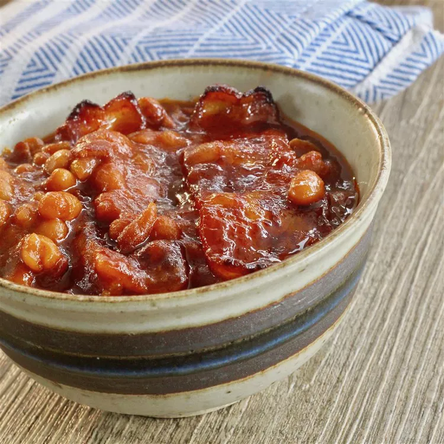

Bourbon Baked Beans

Perfect Blend of Flavors!
Ingredients
- ½ cup brown sugar
- 1 tablespoon ground paprika
- 1 teaspoon dry mustard
- ¼ teaspoon cayenne pepper
- 1 (12 fl oz) can caffeinated pepper-type soda (such as Dr Pepper)
- ¾ cup ketchup
- ¼ cup Worcestershire sauce
- 8 slices bacon
- 1 large onion, finely chopped
- 1 clove garlic, minced
- ¼ cup bourbon
- 2 (16 ounce) cans baked beans with pork
Steps
- Preheat the oven to 350 degrees F (175 degrees C).
- Mix brown sugar, paprika, mustard, and cayenne pepper together in a bowl.
- Whisk in pepper soda, ketchup, and Worcestershire sauce until brown sugar is dissolved.
- Cut 4 slices of bacon into small strips.
- Cook and stir in a large Dutch oven over medium heat until almost crispy, 3 to 5 minutes.
- Transfer to a bowl, reserving bacon grease.
- Stir onion into the bacon grease in the Dutch oven; cook and stir until soft (3-5 mins).
- Add garlic; cook and stir for 1 minute.
- Pour in bourbon, stirring to scrape up browned bits off the bottom with a wooden spoon.
- Stir bacon strips back in.
- Pour brown sugar mixture and baked beans into the Dutch oven.
- Simmer until beans are heated through, about 15 minutes.
- Arrange remaining 4 slices of bacon on top of the beans.
- Bake in the preheated oven, covered, until beans are bubbly and sauce is syrupy, about 2½ to 3 hours.